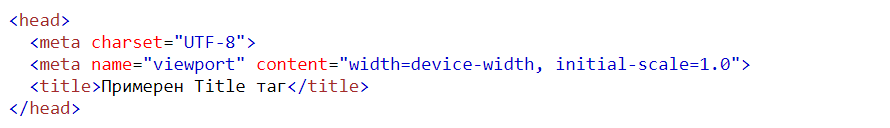
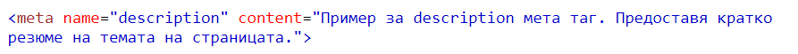
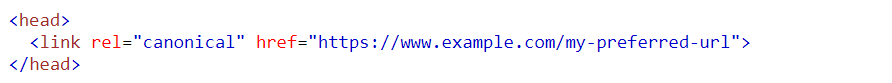
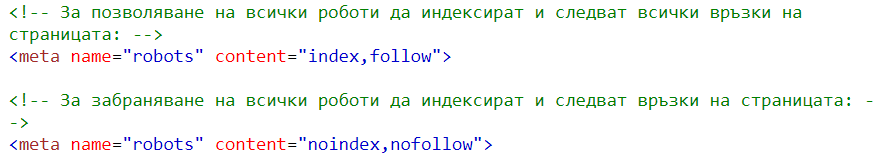
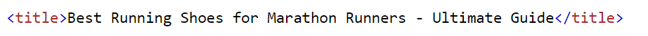
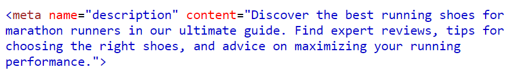
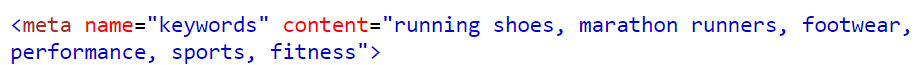

HTML мета тагове и SEO
Въведение
HTML мета таговете са решаващ аспект от оптимизацията за търсачки (SEO). Тези тагове са фрагменти от код, които предоставят информация за съдържанието на уеб страница на търсачки, браузъри и други уеб приложения. HTML мета таговете са невидими за посетителите на уебсайта, но играят важна роля при определяне на видимостта на уебсайта в страниците с резултати от търсачките (SERP).
мета таговете могат да предават различни видове информация за уеб страницата, включително заглавие на страницата, описание, ключови думи, автор и информация за авторските права. Те могат също да предоставят инструкции на уеб роботите как да индексират и показват съдържанието на страницата. Докато някои мета тагове вече не са подходящи за SEO, други остават съществени за подобряване на видимостта и класирането на уебсайта в резултатите от търсенето.
Значението на HTML мета таговете в SEO не може да бъде надценено. Търсачките разчитат на мета тагове, за да разберат съдържанието на дадена уеб страница и да я класират по съответния начин. Един добре оптимизиран мета таг може да направи разликата между това да се показва в горната част на резултатите от търсенето или да не се показва изобщо. мета таговете могат също да подобрят честотата на кликване (CTR) на уеб страница, като предоставят на потребителите повече информация за съдържанието на страницата, преди да кликнат върху нея.
Този реферат предоставя общ преглед на HTML мета таговете и тяхното значение за SEO. Той обхваща различните типове мета тагове, като тагове за заглавия, тагове за описание, тагове за ключови думи, тагове за роботи и канонични тагове. Ще обсъдим също как търсачките използват мета тагове, за да определят уместността и ранга на дадена уеб страница, най-добрите практики за ефективно използване на мета тагове, както и алатки кои могат да се ползват за подобряване на SEO на уебсайт. Като бонус на произволни места има хакове.
Рефератът очертава значението на избора на подходящи ключови думи, писането на ефективни заглавия и описания, избягването на дублиращи се проблеми със съдържанието, осигуряването на правилно внедряване на тагове и използването на маркиране на структурирани данни.
Видове HTML мета тагове
В този раздел ще обсъдим различните видове HTML мета тагове и тяхното значение за SEO.
-
Title таг
Заглавният таг е може би най-важният мета таг за SEO. Той предоставя кратко и точно резюме на съдържанието на уеб страница и се появява като заглавие в резултатите от търсачката. Заглавният таг трябва да бъде под 60 знака и да съдържа подходящи ключови думи. Ето пример за код на таг за заглавие:
Увеличете CTR, като добавите година към заглавието
Увеличаването на кликванията върху уебсайт повишава неговото класиране. Добавете годината към заглавието, за да повишите CTR. Това сигнализира за свежест и печели благосклонност към търсачките. Той е ефективен за съдържание, което вече се класира в SERP, тъй като по-високият CTR подобрява класирането на първа страница.
-
Description таг
Тагът за описание предоставя кратко резюме на съдържанието на уеб страницата и се показва под заглавието в резултатите от търсенето. Трябва да бъде под 160 знака и да включва подходящи ключови думи. Ето пример за код на таг за описание:
 -
Keywords таг
Тагът за ключова дума някога е бил основен мета таг за SEO, но оттогава е станал по-малко важен поради спам. Той определя ключовите думи, подходящи за съдържанието на уеб страницата. Ето пример за код на таг за ключови думи:
Оптимизирайте изображения с описателен алтернативен текст
Alt текст е жизненоважен за SEO, тъй като позволява на Google да разбере съдържанието на изображение и предоставя информация на посетителите, когато изображенията не могат да бъдат показани на уебсайт. Избягвайте да използвате кратък alt текст, вместо това опишете изображенията, както бихте направили на сляп човек. Въздържайте се от претоварване на алтернативния текст с ключови думи, тъй като това може да има отрицателно въздействие върху класирането на сайта и да изглежда като спам от Google.
-
Canonical таг
Каноничният таг се използва за указване на предпочитаната версия на уеб страница, особено в случаите, когато има проблеми с дублирано съдържание. Помага за предотвратяване на санкции за дублирано съдържание от търсачките. Ето пример за код на каноничен таг:
 -
Robots таг
Тагът robots инструктира уеб роботите как да индексират и показват съдържанието на уеб страницата. Може да попречи на дадена страница да бъде индексирана или показана в резултатите от търсенето. Ето примери за Robots мета тага:
 -
Други тагове
Има и други HTML мета тагове, като Open Graph и Twitter Cards, които се използват за оптимизиране на видимостта на уебсайт в платформите на социалните мрежи. Таговете Open Graph указват заглавието, описанието и изображението, които да се показват, когато дадена уеб страница се споделя в социални мрежи. Таговете на Twitter изпълняват подобна функция за Twitter.
Уведомете Google за вашите профили в социалните мрежи
Оптимизирането на вашите социални мрежи е важно, защото може да укрепи вашят бранд. Ще спечелите повече видимост и ще генерирате повече потенциални клиенти за вашия бизнес. Също така, колкото повече вашето съдържание се споделя в социалните мрежи, толкова повече хора ще го видят и ще се свържат с него.
По-важното е, че ще ви помогне да получите повече видимост при търсене. В края на краищата профилите ви в социалните мрежи често се класират на първата страница в резултатите от търсенето.
Значението на HTML мета таговете в SEO
Направете вашите URL адреси удобни за SEO
Удобен за SEO URL адрес описва страницата с помощта на ключови думи, които са лесни за четене както за търсачките, така и за потребителите. Тя трябва да осигури добро потребителско изживяване и да каже на търсачките за какво е страницата.
Обяснение как търсачките използват мета тагове
Търсачките използват мета тагове, за да разберат съдържанието на дадена уеб страница и да я класират съответно в резултатите от търсенето. Когато потребител въведе заявка в търсачка, търсачката използва алгоритъм за анализиране и класиране на уеб страниците, които съдържат подходящо съдържание. мета таговете предоставят допълнителна информация за съдържанието на уеб страницата, като нейното заглавие, описание и ключови думи, което може да помогне на търсачките да разберат по-добре страницата и да я класират по-точно.
Влияние на мета таговете върху класирането в търсачките
Добре оптимизираните мета тагове могат да имат значително влияние върху класирането на уеб страницата в търсачката. Като предоставят на търсачките точна и подходяща информация за съдържанието на уеб страницата, мета таговете могат да подобрят видимостта на страницата в резултатите от търсенето. Например, добре написан етикет за заглавие, който включва подходящи ключови думи, може да подобри честотата на кликване на уеб страницата и нейното класиране в резултатите от търсенето. По същия начин етикет за описание, който точно описва съдържанието на уеб страница, може да насърчи потребителите да кликнат върху връзката и да посетят страницата, което също може да подобри нейното класиране.
Компресирайте вашите изображения
Компресирането на вашите изображения, за да се намали общият размер на файла на вашия сайт, е от решаващо значение за SEO, тъй като засяга зареждането на страницата ви. Уебсайт с голям размер на файла става тежък и ще отнеме повече време за зареждане.
Можете да ускорите зареждането на страницата си, като компресирате изображенията си. Освен това ще намалите степента на отпадане от потребители, които нямат търпението да чакат сайтът ви да приключи зареждането.
Примери за добре оптимизирани мета тагове
Title таг: Ефективният заглавен таг трябва да включва подходящи ключови думи и да описва точно съдържанието на уеб страницата. Например:

Ето защо е добре оптимизиран:
- Релевантност: Тагът за заглавие включва подходящи ключови думи, като "Best Running Shoes", "Marathon Runners" и "Ultimate Guide" . Тези ключови думи отразяват съдържанието на страницата и е вероятно да съответстват на това, което потребителите търсят.
- Дължина: Тагът за заглавие е кратък и в рамките на препоръчителната дължина от около 50-60 знака. Предоставя ясно и кратко описание на съдържанието на страницата, без да е твърде дълго.
- Уникалност: Всяка страница от вашия уебсайт трябва да има уникален таг за заглавие, който точно представя конкретното съдържание на тази страница. Това помага на търсачките да разберат отличителните черти на вашите страници и предотвратява объркване сред потребителите.

От същите причини е добре оптимизиран, единствената разлика е че дължината трябва да не надвишава 150-160 характера и че има повече ключови думи, като "best running shoes," "marathon runners," "expert reviews," "tips for choosing the right shoes," и "maximizing running performance." Keyword таг: Макар и по-малко важни, отколкото в миналото, тагът за ключови думи все още може да бъде полезен, когато се използва разумно. Трябва да включва подходящи ключови думи, които точно отразяват съдържанието на уеб страницата. Например:

Ето защо е добре оптимизиран:
- Релевантност: Включване на ключови думи, които отразяват точно съдържанието на страницата и са подходящи за вашата целева аудитория. В този пример се използват ключови думи като "running shoes," "marathon runners," "footwear," "performance," "sports," и "fitness".
- Разнообразие: С използване на комбинация от общи и конкретни ключови думи, за да се покрият различни аспекти на съдържанието. Това помага на търсачките да разберат контекста и уместността на вашата страница спрямо по-широк кръг от заявки за търсене.
- Избягване на препълването на ключови думи: Трябва да се внимава да не се претоваря мета тага на ключови думи с прекомерни или несвързани ключови думи. Тази практика се счита за спам и може да има отрицателно въздействие върху SEO на вашия уебсайт.
Добри практики за използване на HTML мета тагове
Избор на подходящи ключови думи:
Когато избирате ключови думи за вашите мета тагове, важно е да изберете ключови думи, които точно отразяват съдържанието на вашата уеб страница. Избягвайте препълването с ключови думи или използването на неподходящи ключови думи, тъй като това може да навреди на класирането ви в търсачките.
Проверете и поправете неработещи връзки
Неработещата връзка е връзка на вашия сайт към друга уеб страница на вашия сайт (или други уебсайтове), която вече не е достъпна. Неработещите връзки са резултат от много проблеми, включително правописни грешки в URL адреса, изтрити страници, страница, която е преместена, но не е внедрено пренасочване, и други. Неработещите връзки оказват негативно влияние върху вашето SEO, защото причиняват грешки при обхождане и лошо класиране. Това също води до загуба на трафик, тъй като потребителите нямат достъп до URL адреса.
Писане на ефективни заглавия и описания:
Вашият таг за заглавие и таг за описание трябва да са добре написани и да описват точно съдържанието на вашата уеб страница. Включете подходящи ключови думи в тага за заглавие и напишете кратък и завладяващ таг за описание, който насърчава потребителите да кликнат върху връзката ви.
Избягване на проблеми с дублирано съдържание:
Дублираното съдържание може да навреди на класирането ви в търсачките, така че е важно да избягвате използването на дублиращи се мета тагове на различни страници от уебсайта ви. Използвайте уникални и подходящи мета тагове за всяка страница от вашия уебсайт.
Осигуряване на правилно внедряване на тагове:
Уверете се, че вашите мета тагове са правилно внедрени в HTML кода на вашите уеб страници. Проверете за синтактични грешки и се уверете, че маркерите ви са поставени правилно в секцията head на вашия HTML код.
Използване на маркиране на структурирани данни:
Маркирането на структурирани данни може да помогне на търсачките да разберат съдържанието и структурата на вашите уеб страници. Използвайте маркиране на схема, за да предоставите допълнителна информация за уебсайта си, като рецензии, оценки и информация за продукта.
Инструменти за SEO
Google PageSpeed Insights
Проверете скоростта и използваемостта на вашия сайт на множество устройства
Въведете URL адрес и този инструмент ще тества времето за зареждане и производителността за този URL адрес на настолен компютър и мобилно устройство. След това оценява ефективността на вашия сайт с резултат от 0 - 100. Той ви казва точно колко бързо е необходимо за зареждане на сайта според различни показатели и също така предлага области за подобрение.
Answer the Public
Стотици идеи за ключови думи, базирани на една ключова дума
Ограничения: Три безплатни търсения на ден; трябва да се регистрирате, за да ги използвате
Въведете подходяща ключова дума и Answer the Public ще предостави огромен списък с възможности за ключови думи с дълга опашка, плюс често задавани въпроси.
Алтернативи: KeywordTool.io, UberSuggest, Keyword Sheeter, Keyword Generator
Google Analytics
Пълна уеб статистика и информация за търсенето
Вероятно най-мощният наличен безплатен инструмент за анализ, Google Analytics проследява почти всяка част от трафика, който можете да си представите на уебсайта си – откъде идва, коя страница го получава и т.н.
Въпреки че не е само за SEO, той все пак е полезен инструмент за проследяване дали получавате трафик от органично търсене.
SERP Snippet Optimization Tool
Вижте как ще изглеждат вашите уеб страници в резултатите от търсенето с Google
Вижте как вашето мета заглавие и описание ще се показват в резултатите от търсенето, преди дори да публикувате вашата уеб страница. Работи за десктоп и мобилно устройство.
Проверете за проблеми с отрязването и ги поправете незабавно.
Заключение
В заключение, HTML мета -аговете са основен компонент на оптимизацията за търсачки (SEO). Като ги използвате ефективно, можете да помогнете на търсачките да разберат съдържанието и структурата на вашите уеб страници и да подобрят класирането ви в търсачките.
В този реферат разгледахме различните видове HTML мета тагове, тяхното значение за SEO и най-добрите практики за използването им. Нека обобщим някои ключови изводи от този реферат:
- HTML мета таговете предоставят важна информация за вашите уеб страници на търсачките.
- Най-важните типове мета тагове са заглавният таг, тагът за описание, тагът за ключови думи, тагът robots и каноничният таг.
- Търсачките използват мета тагове, за да определят уместността и качеството на вашите уеб страници.
- Добре оптимизираните мета тагове могат да ви помогнат да подобрите класирането в търсачките и да привлечете повече посетители към уебсайта си.
- Най-добрите практики за използване на HTML мета тагове включват избор на подходящи ключови думи, писане на ефективни заглавия и описания, избягване на проблеми с дублиране на съдържанието, осигуряване на правилно внедряване на тагове и използване на маркиране на структурирани данни.
Сега, след като разбирате значението на HTML мета таговете в SEO и как да ги използвате ефективно, е време да предприемете действия и да оптимизирате мета таговете на вашия уебсайт. Ето няколко прости стъпки, които можете да предприемете, за да започнете:
- Извършете проучване на ключови думи, за да идентифицирате подходящи ключови думи за вашите уеб страници.
- Напишете уникални и описателни тагове за заглавие и описание за всяка уеб страница.
- Избягвайте дублирането на мета тагове на няколко страници от вашия уебсайт.
- Използвайте каноничния маркер, за да посочите предпочитаната версия на уеб страница, когато има няколко версии на една и съща страница на вашия уебсайт.
- Използвайте маркиране на структурирани данни, за да предоставите допълнителна информация за уебсайта си, като рецензии, оценки и информация за продукта.
Следвайки тези добри практики и избягвайки често срещани грешки, можете да оптимизирате вашите HTML мета тагове и да подобрите видимостта на уебсайта си в резултатите от търсачката. Не пренебрегвайте значението на HTML мета таговете във вашата SEO стратегия. Предприемете действие, за да оптимизирате мета таговете на уебсайта си и да подобрите класирането в търсачката.
Източници
[1] Joshua Hardwick, "Meta Tags for SEO: A Simple Guide for Beginners", публикуван Sep 29, 2020, [https://ahrefs.com/blog/seo-meta-tags/], последно посетен на: 2023-4-17
[2] Tereza Litsa, "A quick and easy guide to meta tags in SEO", публикуван Apr 4, 2018, [https://www.searchenginewatch.com/2018/04/04/a-quick-and-easy-guide-to-meta-tags-in-seo/], последно посетен на: 2023-4-17
[3] Brian Harnish, "Meta Tags: What You Need To Know For SEO", публикуван на Oct 28, 2022, [https://www.searchenginejournal.com/meta-tags-what-you-need-to-know-for-seo/468015/], последно посетен на: 2023-4-17
[4] Kevan Lee, "27 Simple and Free SEO Tools to Instantly Improve Your Marketing [Updated for 2023]", публикуван на Feb 2, 2023, https://buffer.com/library/free-seo-tools/], последно посетен на: 2023-5-15
[5] Kato Nkhoma, "30+ SEO Hacks Guaranteed to Grow Your Traffic", публикуван на May 8, 2023, [https://aioseo.com/seo-hacks-to-grow-your-traffic/], последно посетен на: 2023-5-15
[6] Kathryn Rothwell, "a beginner's guide to SEO", публикуван на Dec 5, 2022, [https://www.femalefactor.global/post/a-beginner-s-guide-to-seo], последно посетен на: 2023-5-9
[7] Kelly Lyons, "Improve SEO: 11 Steps to Improve Your Rankings", публикуван на Aug 12, 2022, [https://www.semrush.com/blog/improve-seo/?kw=&cmp=EE_SRCH_DSA_Blog_EN&label=dsa_pagefeed&Network=g&Device=c&kwid=dsa-1754723156313&cmpid=18361923498&agpid=140825957425&BU=Core&extid=60109338547&adpos=], последно посетен на: 2023-5-10